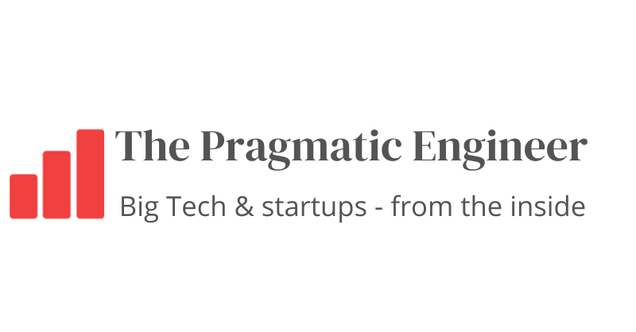
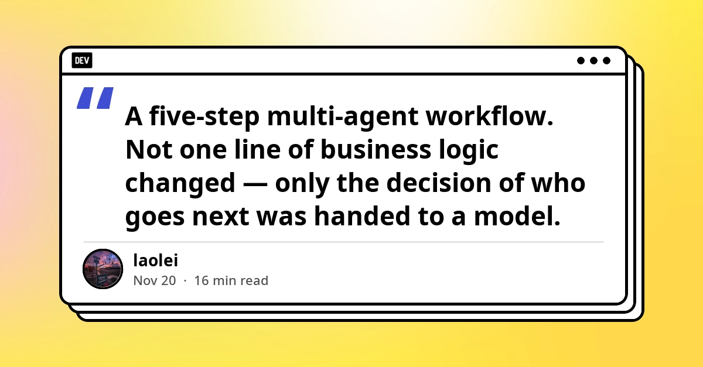
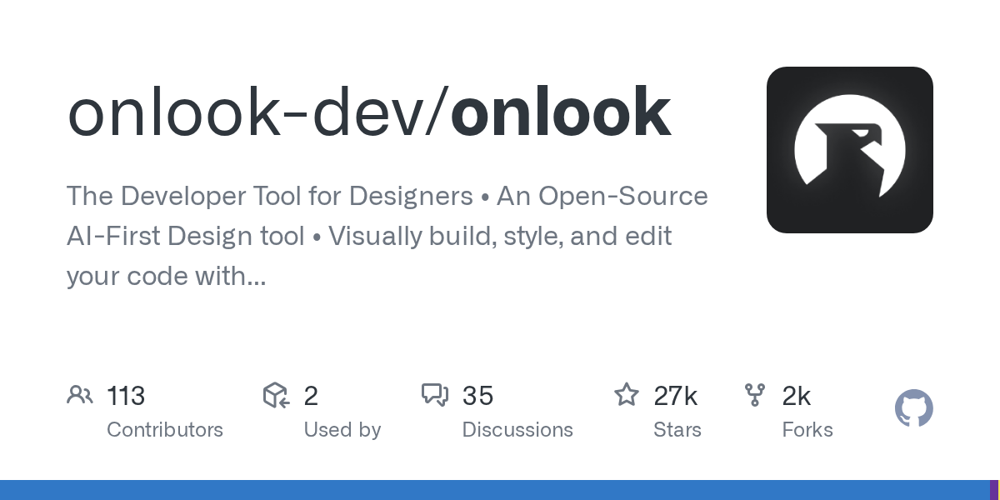
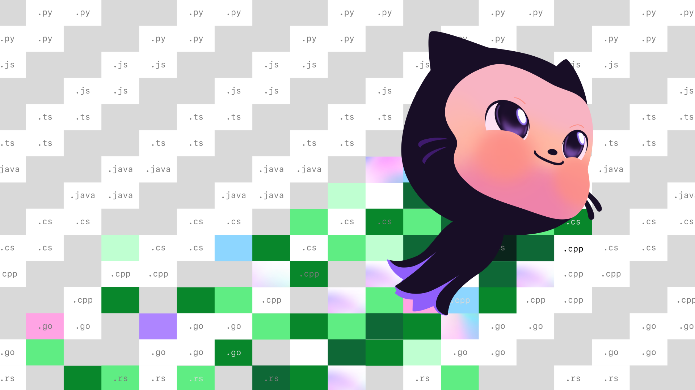
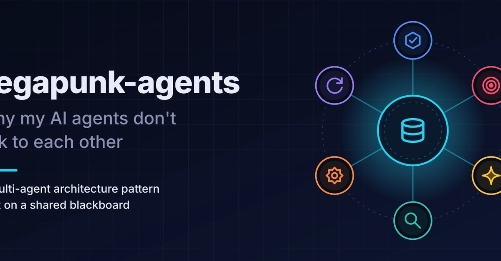
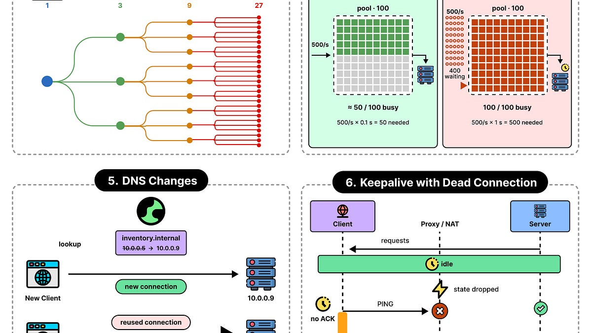
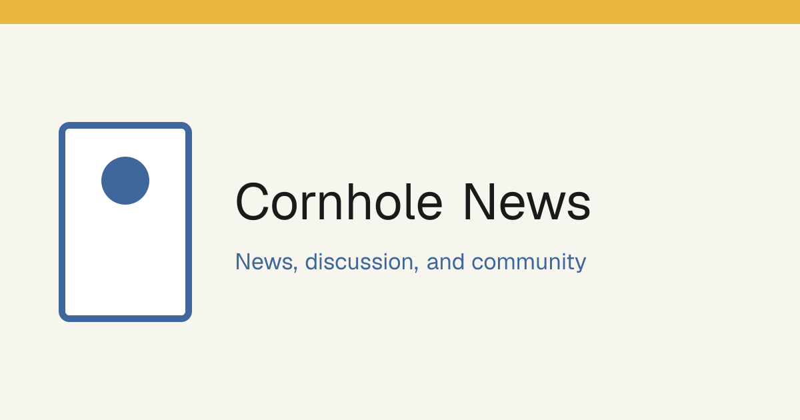
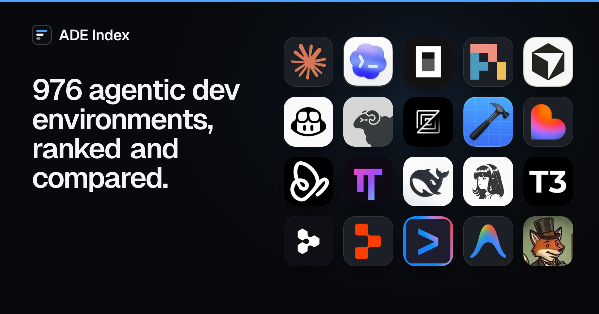

🔥 Top 3 (must read)
The Pulse: What can we learn from the Railway hack?
The cloud platform Railway was hacked and has now published a detailed postmortem (a write-up of what went wrong). The attacker probably used AI models with no safety limits, and Railway made its systems stronger because of the attack. Why it matters: This is a real case of AI-assisted attacks on cloud infrastructure. It is good input for your own SRE and security review with the team.

PostgreSQL 19 Released
PostgreSQL 19 is out two months late. The main reason was the large number of security issues that AI tools found and reported. New features for API developers include
INSERT ... ON CONFLICT DO SELECT (get-or-create in one statement), WAIT FOR LSN (read your own writes on a replica), REPACK (CONCURRENTLY) (remove bloat without downtime), JSON output from COPY, and faster foreign-key checks during bulk inserts. Why it matters: If your Node.js backends use Postgres, these features remove common workarounds such as get-or-create race conditions and stale reads from replicas.S
Why Multi-Agent Systems Get More Expensive — Routing, Handoffs, and Quadratic Cost
In this example, a five-step agent workflow went from 750 to 18,000 overhead tokens. The only change was letting a model decide "who goes next". The cost grows because every agent re-reads everything the agents before it said. Why it matters: Your teams are building with agents. This shows in simple numbers why the agent design can make the bill much bigger before any business logic changes.

🛠 Tools & releases
Launch HN: Onlook (YC W25)
: an open-source developer tool for designers. It could help designers and frontend devs work together. (HN discussion)

Chrome AI features wasting much bandwidth
: a report that Chrome's AI features use a lot of network data. Worth knowing if you build web apps for users on slow or metered connections. (HN, 127 points)
P
GitHub: Replica and the Open Source Accessibility Framework
: two new open-source projects from GitHub for collaboration and accessibility.

🤖 AI for developers
Token fraud is here and it's BAD
: Claire Vo (ChatPRD) talks about attackers abusing AI products to get LLM tokens they do not pay for. If you ship any feature that calls an LLM API, you need rate limits and abuse checks.
S
Why my AI agents don't talk to each other: the Vegapunk pattern
: a design where specialist agents share one memory store instead of sending messages to each other. It pairs well with the multi-agent cost article above.

👔 Engineering & teams
What can we learn from the Railway hack?
: a postmortem you can use as a team reading for an incident-review session.
The Invisible Systems: What Happens Between Services
: ByteByteGo explains the layer behind the "arrows" in architecture diagrams, meaning how services really talk to each other. Useful for distributed-systems design reviews.

🎯 For me
PostgreSQL 19: you can use
ON CONFLICT DO SELECT and WAIT FOR LSN directly in Node.js API code.Multi-agent cost math: use it when your team chooses between agent designs.
Railway hack: an SRE and security lesson for the team.
No items today on Flutter, Playwright, Maestro or E2E testing.
💡 App ideas & indie builds
Cornhole News
: a news site in the style of Hacker News, but for news from the US Midwest. Problem: regional news is spread across many small outlets and has no shared, community-ranked front page. Inspiration: the "HN for X" format can work for any region or niche community. (194 points)

Foolscap
: a writing app that reads your book but never writes text for you. Problem: writers want AI feedback without the AI taking over their voice. Inspiration: building an AI product that only assists is a clear selling point, and users discuss it a lot (84 comments). (HN)

ADE Index
: a sourced and ranked list of 975 agentic coding tools. Problem: there are too many AI coding tools to compare. Inspiration: a curated, ranked directory is a simple app that becomes useful in a busy market. (HN)

Weight-space programming playground
: a WebGPU demo where you can watch "weight-space programming" happen live in the browser. Problem: ML ideas are hard to understand from papers alone. Inspiration: interactive browser demos are a strong way to teach hard topics. (HN)

🎓 Try this
Try PostgreSQL 19's
INSERT ... ON CONFLICT DO SELECT on one get-or-create endpoint in a Node.js service. One statement can replace the usual "select, then insert, then retry on conflict" code and its race condition (two requests creating the same row at the same time). See the release notes via Simon Willison and the feature summary for API devs.